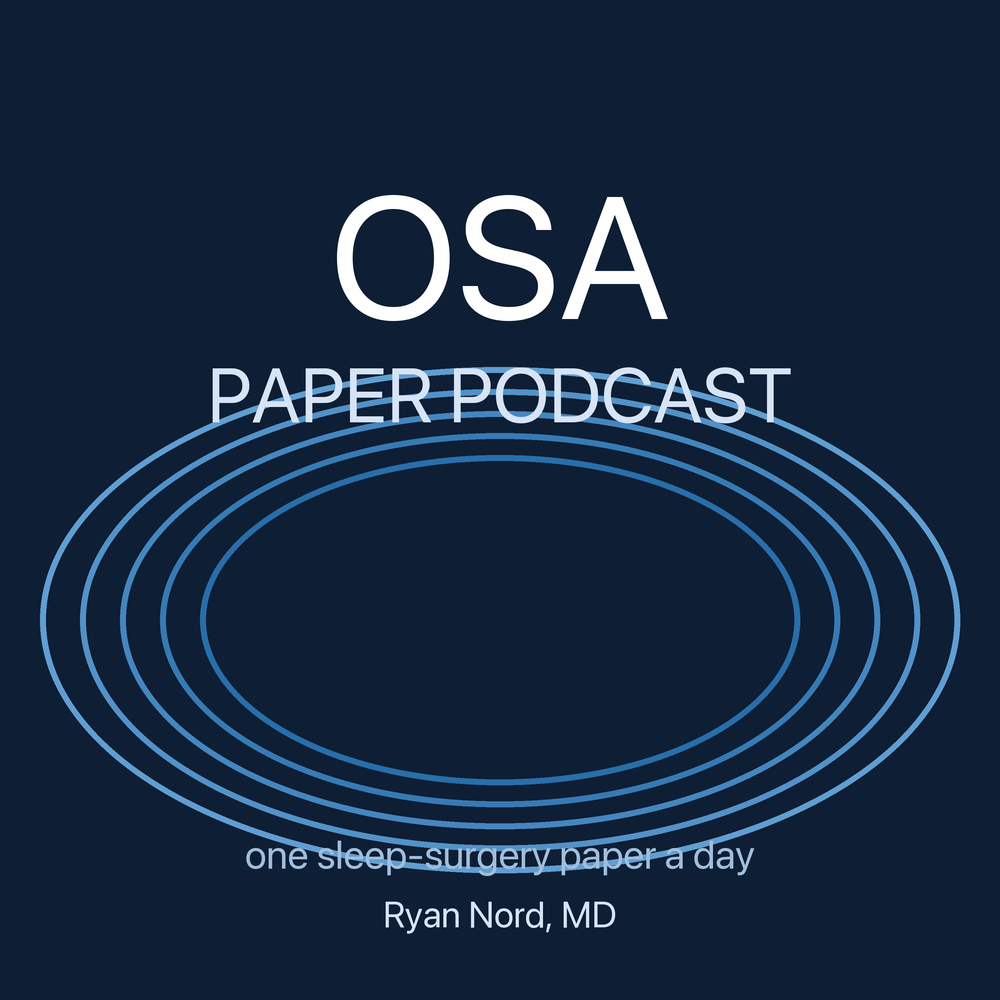

One sleep-surgery paper a day, reviewed the way an attending teaches residents
Subscribe: in Apple Podcasts choose Library → … → Follow a Show by URL and pastehttps://rnordxx1.github.io/osa-paper-podcast/feed.xml
Each weekday, one new paper on obstructive sleep apnea surgery: hypoglossal nerve stimulation, palate surgery including barbed reposition pharyngoplasty, tongue base, skeletal and nasal procedures, patient selection and comparators. Every episode summarizes the paper, walks through it as a teaching round, places it against a 440-paper evidence library, and ends with whether it should change practice. Episodes are written and narrated by an AI system working from the full text of each paper and the host's curated library of digests, under rules set by the host. They are reviewed for teaching, not for patient care. Nothing here is medical advice. Produced by Ryan Nord, MD (VCU Health). Disclosures: consultant to AvivoMed; previously a consultant to Inspire Medical Systems (ended 2025) and Medtronic. No company funds or reviews this podcast.